Approved — hybrid AI-generated world backgrounds + procedural tiles/UI + processed AI key poses, one locked palette per world. Rationale: docs/part2/06-art.md. Prompts: docs/part2/art/gen/PROMPTS.md.
Every scene: Part 1 today (real screenshot) / procedural (code-painted on the existing generator toolkit) / AI-sourced (generated with Google Gemini 3.1 Flash Image via the OpenRouter API, then processed by a deterministic prototype: key-out, registration and seams, quantize-then-vote to the World 1 palette, loops). No browser login was used. AI generation covers World 1 backgrounds, Anna, the World 6 boss arena and the menu background (17 images, $1.151).
1. Scenes: Part 1 / procedural / AI-sourced
Level 1 — desktop 1280×720
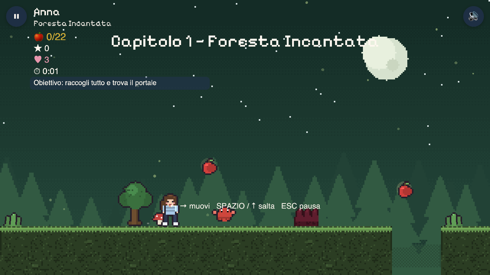
Part 1 — Foresta Incantata, real capture
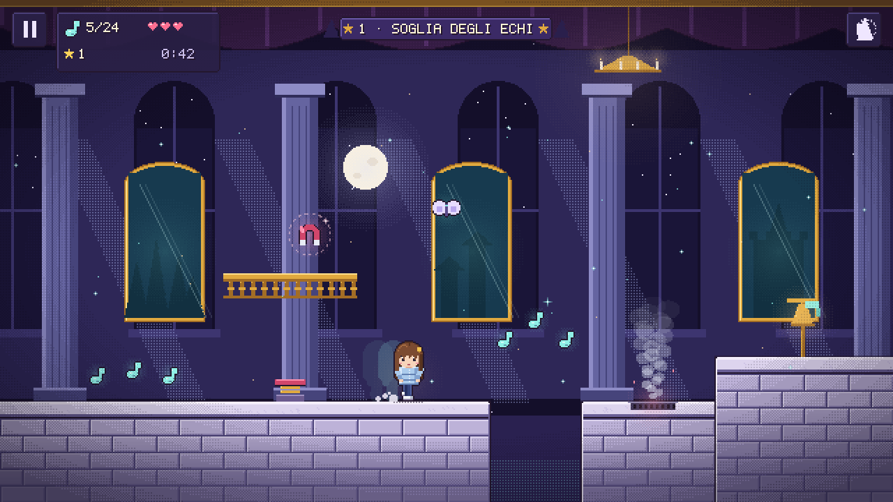
Procedural — marble autotiles, baked light, 32×48 Anna, V vent, L magnet, HUD
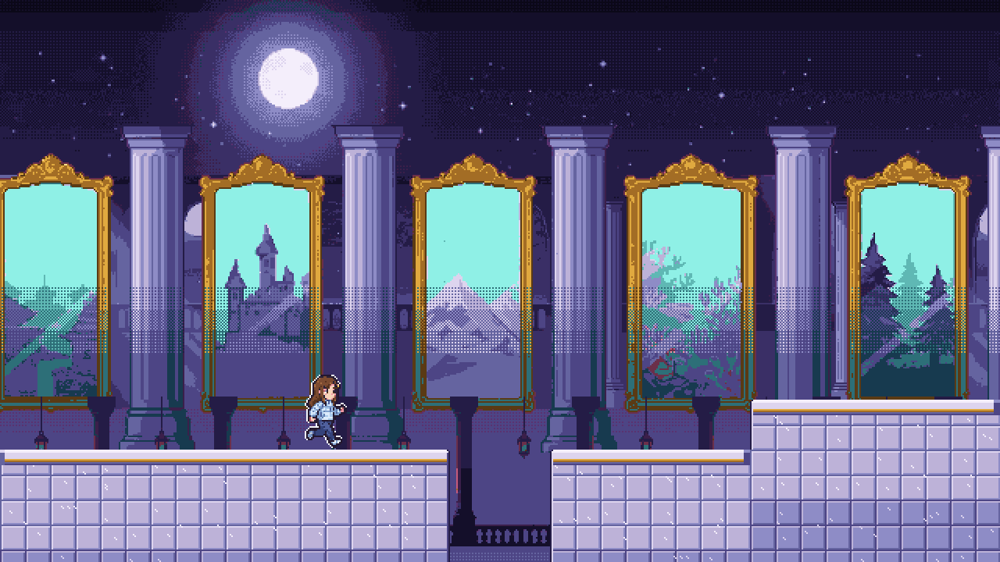
AI-sourced (hybrid) — generated W1 layers with the lane-band rule, procedural World 1 marble tiles (autotiled), processed Anna with dark outline + light rim
Procedural — world cards, 9-slice buttons (title is a placeholder)
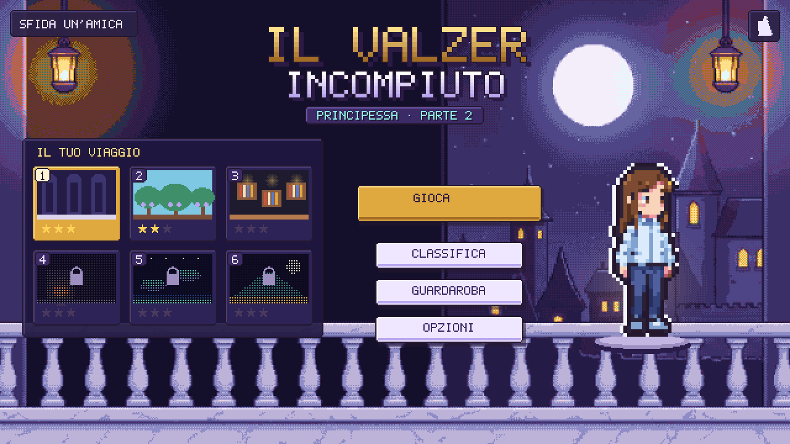
AI-sourced (hybrid) — generated balcony background (quantized to W1), procedural logo/cards/buttons, processed Anna idle ×3
AI-sourced iPhone views
Level 1 — iPhone landscape
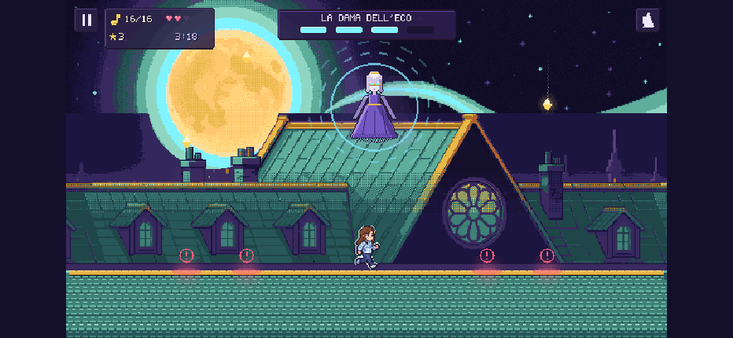
Boss arena — iPhone landscape
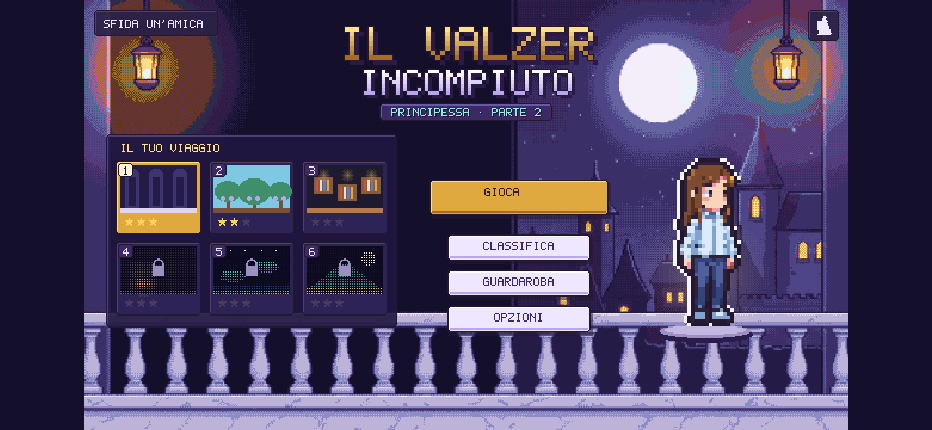
Menu — iPhone landscape
Lane readability gate (OKLCH L, from proc/report.json)
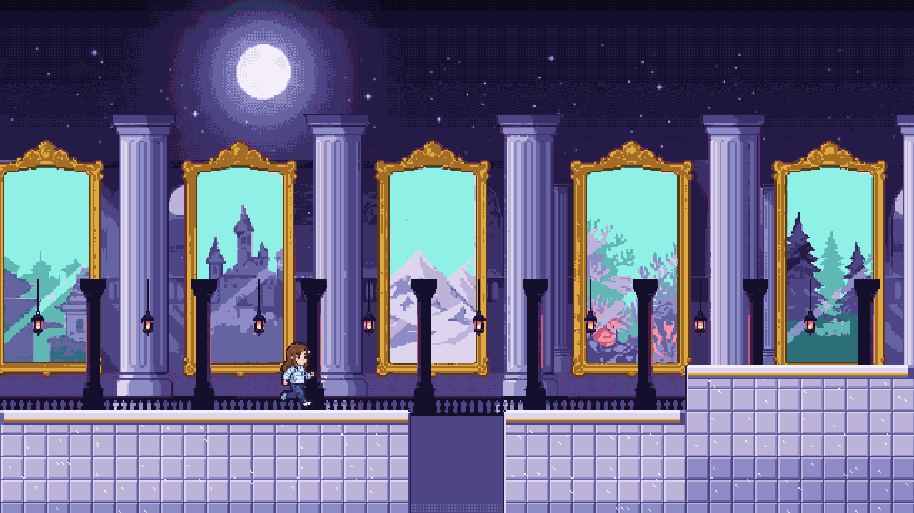
Before: no lane-band rule, near layer over the lane, no rimAfter: lane-band value/chroma compression, near layer moved behind the tiles, Anna light rim
loading proc/report.json…
2. Live parallax preview (processed AI strips, looping)
Sky fixed; far ×0.2, mid ×0.5, near ×0.8 of one camera speed. Each strip is a processed seamless loop, so any visible jump here is a real seam bug.
3. Backgrounds — raw segments / processed strips
Part 1 today (1920 px loop, flat silhouettes)
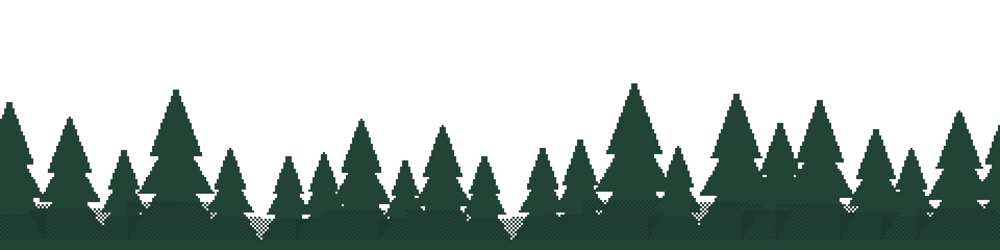
AI World 1 — raw generations
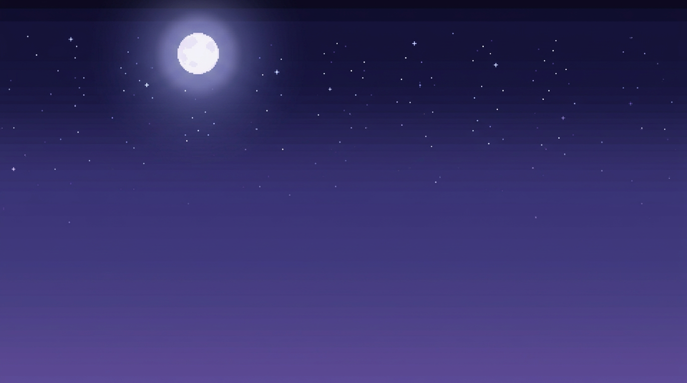
w1-sky (opaque)
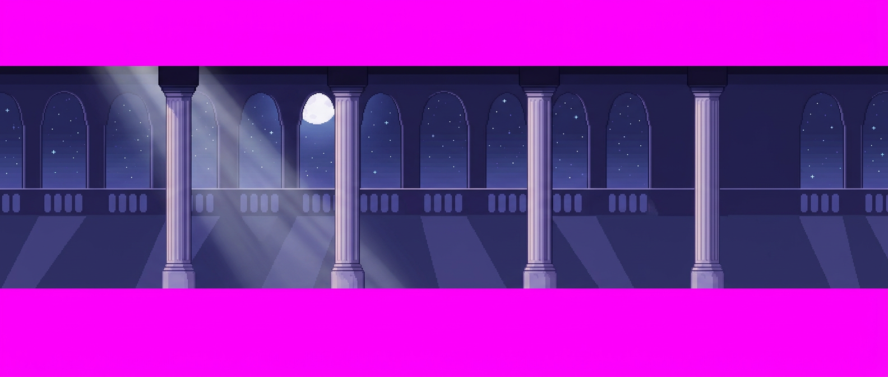
w1-far-seg1
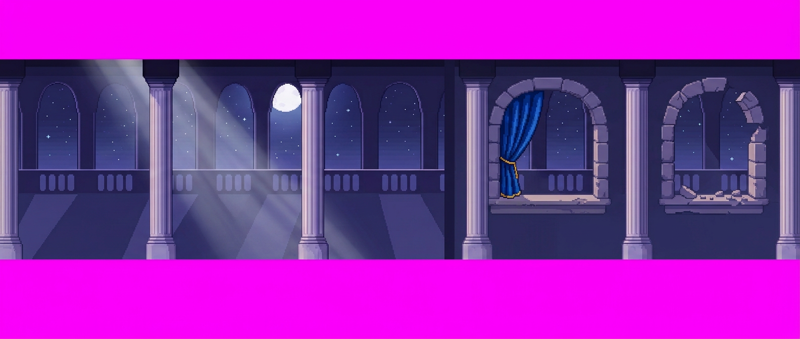
w1-far-seg2 — "extend right" (accepted after key-out fix)
IT — worn look selected: only a disabled "INDOSSATO" button (stand-in 5×7 font)RU (primary market) — purchasable look selected: «Купить 1200» + opt-in «Примерить»; all text rendered with Tiny5 (OFL 1.1, full Cyrillic) on its 8 px grid: captions 8 px, labels 16 px, title 24 px native (caps 5/10/15 px), no anti-aliasing. Card captions are below the 20-runtime-px minimum; the real layout must grow them
Procedural — trick telegraphs (cyan, never lethal) + offer cards
Hybrid: AI backgrounds + procedural sprites/tiles/UI
Look
Crisp, readable; already a clear upgrade.
Richest backgrounds (see composite); processed Anna reads well at 32×48.
Rich backgrounds behind a crisp, consistent lane.
Consistency
Perfect by construction.
Anna consistent across ref/run; one idle pose drifted; "extend right" seams failed, outpaint canvas works.
Drift confined to backgrounds, where acceptance rules catch it.
Animation volume
Full frame budget.
Key poses only; in-betweens procedural.
Full procedural budget for moving things.
Determinism
Full.
Processing yes; generation no (raw PNG + prompt committed).
Same, backgrounds only.
Cost / speed
Dev time only.
~$0.067 and ~10–12 s per image (measured, 17 calls).
~250–350 images ≈ $17–24.
Risk
Backgrounds less "stunning".
Seams, identity drift, lane contrast, tile style gap.
Style mismatch; mitigated by palette lock + lane gate.
Recommendation: hybrid. AI-sourced long parallax backgrounds (using the outpaint canvas for continuations) + procedural tiles, UI, telegraphs and FX. For characters, the processed AI Anna is strong enough to become the design reference and possibly the key-pose source, with procedural in-betweens and wardrobe layers — your call after comparing section 4.
7. Provenance, licence, cost
Files
Model / service
Terms (commercial use)
gen/*.png (17 images: 12 World 1 + Anna, 5 World 6 + menu; $1.151 total)
google/gemini-3.1-flash-image via OpenRouter chat completions API, 2026-09-15
Gemini API Additional Terms: "Use of Generated Content — Google won't claim ownership over that content" (ai.google.dev/gemini-api/terms); Generative AI Prohibited Use Policy; OpenRouter Terms (openrouter.ai/terms). No non-commercial restriction. Outputs carry an invisible SynthID watermark. Similar output may be generated for others (no exclusivity).
Rejected options: direct Gemini API (HTTP 429 quota exhausted on every image model); Pollinations (its only listed model is sana, whose weights licence was not verified as commercial, so not used); local FLUX.1-schnell (Apache-2.0, but gated behind a Hugging Face login and a 22 GB download).